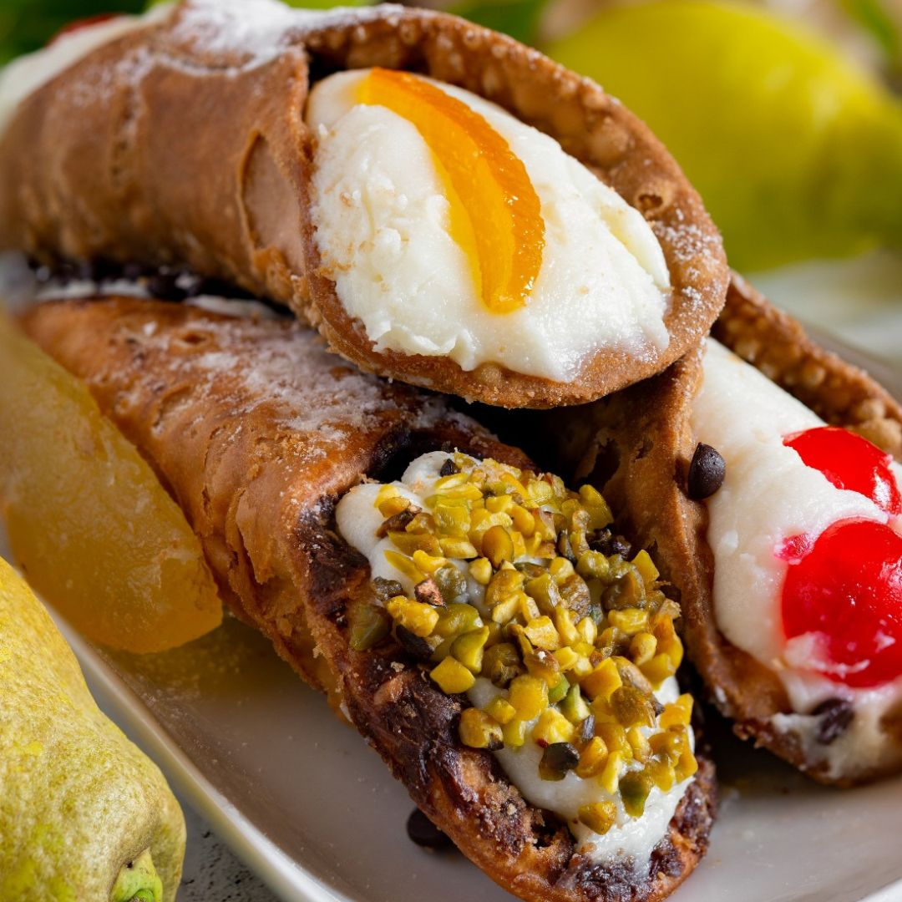
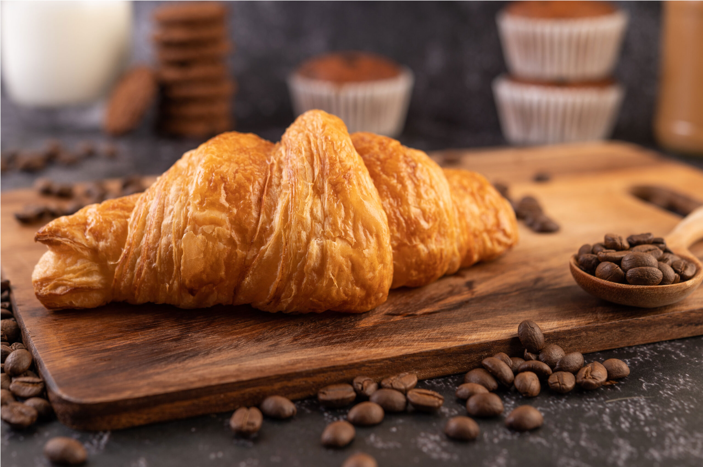

A hagyományos szicíliai cannoli egy cső alakú, borral átitatott tésztából készült tésztából áll, amelyet addig sütnek, amíg hólyagos és hihetetlenül ropogós nem lesz. Ezt a ropogós tésztát rendelésre hűvös, bársonyos, édesített juhtejből készült ricotta krémmel töltik meg. A krémet gyakran étcsokoládé darabokkal vagy kandírozott citrushéjjal keverik, míg a nyitott végeket apróra vágott pisztáciával vagy maraschino cseresznyével díszítik, és porcukorral szórják meg, hogy tökéletes kontrasztot alkossanak az állagok között.

Az olasz cornetto egy félhold alakú reggeli tészta, amelyet réteges élesztős tésztából készítenek, amely tojást és cukrot is tartalmaz, így lágyabb, édesebb és briósszerűbb állagú, mint egy francia croissant. Szinte mindig bőségesen töltik sima tésztakrémmel, gazdag csokoládés mogyorókrémmel vagy sárgabaracklekvárral. Sütés előtt vagy után jellemzően könnyű cukorszirupos mázzal kenik meg, így a hagyományos reggeli kávézási rutin édes és aromás alapját képezi.